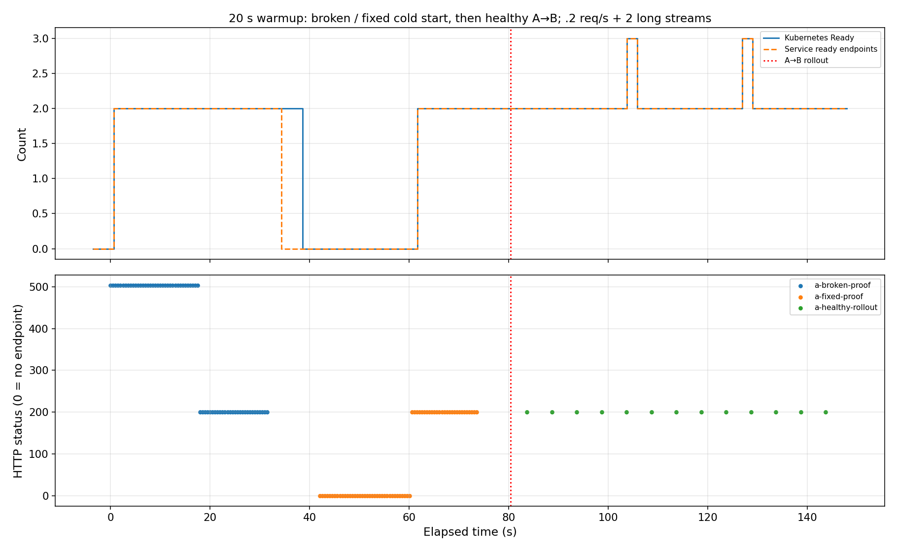
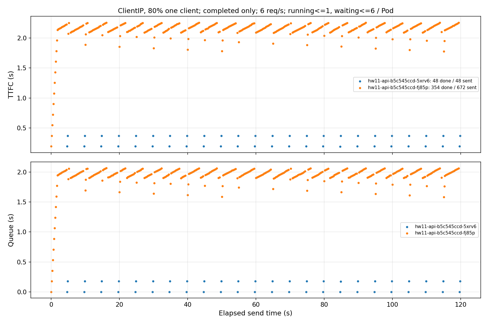
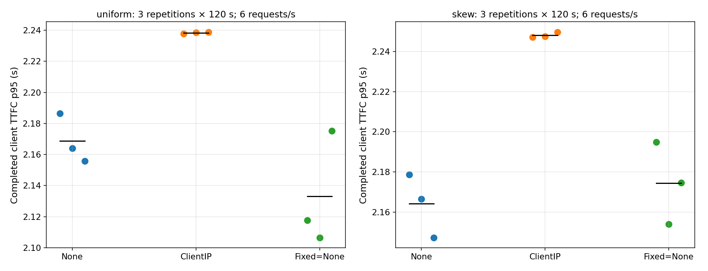
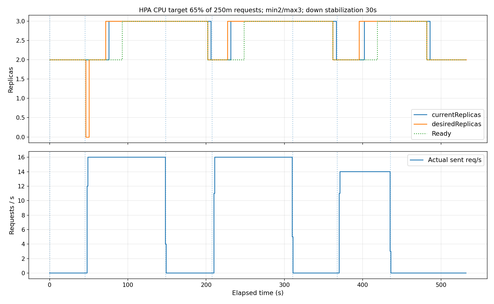

Реальный локальный Kubernetes и HTTP. CPU backend: backend_mode=simulated. Дата опытов: 15 ноября 2026. Итог автоматической проверки требований: PASS. Проверки с доказательствами · Запуск и удаление · Все сырые запросы.
kind 0.30.0 / Kubernetes 1.34.0, Helm 3.19.0, Docker 29.1.3. Один узел, Deployment 2 реплики (HPA: 2–3), четыре клиентских Pod с разными IP. API requests=250m CPU/128Mi, limits=1 CPU/256Mi. Все параметры — в values.yaml. Опыты A и проверки выполнены на образе1.0; перед сравнением B добавлены заголовки Pod/model для отказов (образ1.1), вычислительный backend, очередь и стоимости не менялись. Во всех сравниваемых фазах B используется один и тот же1.1. Runtime полностью закреплён в lock-файле; образы и фактические digest — images.json. Первичная оценка места/лимитов — host-before.json, node-limits.json.
Продолжен фактический код предыдущего ДЗ: Dockerfile копирует service_core.py и release.py из hw8910-broken. Source артефакта — immutable ConfigMap A/B, содержащий model.txt и accepted.json; перед обслуживанием проверяются SHA256 каждого файла, inventory и runtime. Префиксный кеш не хранит ответы или историю. История целиком переносится в messages нового запроса. Request ID, Pod и фактически загруженная версия записываются в ответах и JSON-журнале.
Сеть: kindnet + kube-proxy; клиенты обращаются к ClusterIP Services. В network.txt сохранены Services/EndpointSlice и IP клиентов, в pod-logs — peer_ip backend. Для каждого запроса открывается новое TCP-соединение: httpx max_keepalive_connections=0 и Connection: close. ClientIP действует на IP клиентского Pod, а не на HTTP session_id. При случайном совпадении привязок разных IP несколько клиентов могут оказаться на одной реплике.
Гипотеза: готовность HTTP не означает готовность модели. Исходный дефект: startup/readiness=/health; liveness=/health. Исправление: startup=/startup, readiness=/ready; обе ждут проверенного артефакта и 20-секундного warmup. startup допускает до 90 секунд; readiness снимается при drain. Liveness проверяет живость процесса и не перезапускает его из-за очереди.
Повторён один список из 64 запросов, 2 req/s, 32 с при свежем старте двух реплик: исходный и исправленный. При исходном варианте backend получает холодные запросы и возвращает 503. После исправления рабочий Service не имеет готовых endpoints до warmup: ранние попытки cold start получают сетевую недоступность, а не ошибочную готовность модели. Это ожидаемое поведение полного cold start; доступность при rollout обеспечивает старая версия. Эти ошибки сохранены в общей статистике, не объявлены успешными.
RollingUpdate maxSurge=1/maxUnavailable=0, minReadySeconds=3. Два длительных потока по 64 части с интервалом .5 с стартовали до обновления A→B. PreStop /drain=5 с, terminationGracePeriod=45 с, uvicorn graceful timeout=35 с. Полный штатный повтор: .2 req/s в течение заданного расписания 65 с плюс два длинных потока, 15/15 completed, 0 HTTP5xx, 0 incomplete. Точные времена пересечения rollout и результаты. B прогревается до Ready; старый активный ответ завершается в пределах grace.
Первый диагностический rollout использовал 1.5 req/s при двух занятых длинными потоками слотах: 24 отказа 429, 0 обрывов. Этот результат сохранён (a-rollout-summary.json): бюджет очереди недостаточен для такого временного падения доступной ёмкости. Повтор при оговорённой меньшей нагрузке отделяет корректность graceful rollout от проверки admission; отказ не переименован в успех.
Заведомо неготовая B (neverReady=true) остаётся вне production EndpointSlice. Во время её запуска ответы остаются A; затем Helm управляемо возвращает A, что проверено фактическими model_id. Запросы при плохой B · после отката. В отдельной аварии процесс уничтожен SIGKILL из родительского PID namespace узла; клиент успел получить 200 и части, но не end: результат aborted. Записаны обнаружение отказа, restart и восстановление. Первоначальный kill -9 1 из собственного PID namespace не уничтожил PID1; этот отрицательный опыт сохранён отдельно и не используется как доказательство аварии.

Ограничение: отказ целого узла и производственные сетевые задержки не моделируются. Endpoint propagation требует времени; grace выбирается по максимальной допустимой длительности активного ответа.
Гипотеза: ClientIP удержит 80% одного клиента на одной реплике, даже когда соседняя свободна. Политики None и ClientIP выбирают одни и те же два API Pod. Исправление — отдельный Service fixed с sessionAffinity=None. Все 18 фаз: 3 политики × 2 типа трафика × 3 повтора по 120 с, 720 запланированных запросов в фазе, 6 req/s, открытое расписание. Uniform: по 25% каждому клиенту; skew: ровно 80% одному, остальные поровну с детерминированным чередованием. Payload, длина, chunks=4, chunk_delay=.04 с и offsets совпадают между политиками и повторами. Начальный кеш пустой: /admin/reset после дренирования, backend уже прогрет. Проверка хешей расписаний и длительности.
Одинаковый backend и CPU-стоимости: LRU ёмкостью 8 префиксов, 32 различных префикса, hit=.015 CPU-секунды, miss=.14 CPU-секунды, каждая часть=.01 CPU-секунды, MAX_RUNNING=1 и MAX_WAITING=6 на Pod. CPU расходуется реальным pbkdf2_hmac с thread_time, а задержка между частями — отдельный sleep. Попадание меняет только стоимость prefill-имитации; не воспроизводит настоящий KV-cache. Смена политики не меняет эти значения. Синхронные наблюдения подтверждают очередь горячей реплики при running=waiting=0 соседней (sampling2s).

| Policy skew run1 | Pod | Sent | Completed | Rejected | TTFC p95 s | Queue p95 s |
|---|---|---|---|---|---|---|
| none | hw11-api-b5c545ccd-5xrv6 | 385 | 349 | 36 | 2.204 | 2.011 |
| none | hw11-api-b5c545ccd-fj85p | 335 | 324 | 11 | 2.076 | 1.884 |
| sticky | hw11-api-b5c545ccd-5xrv6 | 48 | 48 | 0 | 0.371 | 0.179 |
| sticky | hw11-api-b5c545ccd-fj85p | 672 | 354 | 318 | 2.249 | 2.055 |
| fixed | hw11-api-b5c545ccd-5xrv6 | 353 | 332 | 21 | 2.198 | 2.005 |
| fixed | hw11-api-b5c545ccd-fj85p | 367 | 341 | 26 | 2.185 | 1.985 |

| Фаза | Plan | Sent | Done n | Reject | Abort | Expired | Error | TTFC p50 s | p95 s | Queue p95 s | Non-success fraction | Timeout fraction | Send lag p95 s |
|---|---|---|---|---|---|---|---|---|---|---|---|---|---|
| b_fixed_skew_1 | 720 | 720 | 673 | 47 | 0 | 0 | 0 | 1.317 | 2.195 | 2.002 | 0.065 | 0.000 | 0.002 |
| b_fixed_skew_2 | 720 | 720 | 683 | 37 | 0 | 0 | 0 | 1.203 | 2.154 | 1.961 | 0.051 | 0.000 | 0.002 |
| b_fixed_skew_3 | 720 | 720 | 678 | 42 | 0 | 0 | 0 | 1.304 | 2.175 | 1.981 | 0.058 | 0.000 | 0.002 |
| b_fixed_uniform_1 | 720 | 720 | 693 | 27 | 0 | 0 | 0 | 1.367 | 2.118 | 1.925 | 0.037 | 0.000 | 0.002 |
| b_fixed_uniform_2 | 720 | 720 | 701 | 19 | 0 | 0 | 0 | 1.375 | 2.107 | 1.914 | 0.026 | 0.000 | 0.002 |
| b_fixed_uniform_3 | 720 | 720 | 689 | 31 | 0 | 0 | 0 | 1.330 | 2.175 | 1.982 | 0.043 | 0.000 | 0.002 |
| b_none_skew_1 | 720 | 720 | 673 | 47 | 0 | 0 | 0 | 1.368 | 2.179 | 1.985 | 0.065 | 0.000 | 0.002 |
| b_none_skew_2 | 720 | 720 | 677 | 43 | 0 | 0 | 0 | 1.273 | 2.166 | 1.974 | 0.060 | 0.000 | 0.002 |
| b_none_skew_3 | 720 | 720 | 683 | 37 | 0 | 0 | 0 | 1.349 | 2.147 | 1.955 | 0.051 | 0.000 | 0.002 |
| b_none_uniform_1 | 720 | 720 | 683 | 37 | 0 | 0 | 0 | 1.319 | 2.187 | 1.994 | 0.051 | 0.000 | 0.002 |
| b_none_uniform_2 | 720 | 720 | 683 | 37 | 0 | 0 | 0 | 1.369 | 2.164 | 1.972 | 0.051 | 0.000 | 0.002 |
| b_none_uniform_3 | 720 | 720 | 683 | 37 | 0 | 0 | 0 | 1.382 | 2.156 | 1.963 | 0.051 | 0.000 | 0.002 |
| b_sticky_skew_1 | 720 | 720 | 402 | 318 | 0 | 0 | 0 | 2.151 | 2.247 | 2.054 | 0.442 | 0.000 | 0.001 |
| b_sticky_skew_2 | 720 | 720 | 402 | 318 | 0 | 0 | 0 | 2.146 | 2.247 | 2.054 | 0.442 | 0.000 | 0.001 |
| b_sticky_skew_3 | 720 | 720 | 402 | 318 | 0 | 0 | 0 | 2.148 | 2.250 | 2.056 | 0.442 | 0.000 | 0.002 |
| b_sticky_uniform_1 | 720 | 720 | 535 | 185 | 0 | 0 | 0 | 2.062 | 2.238 | 2.045 | 0.257 | 0.000 | 0.002 |
| b_sticky_uniform_2 | 720 | 720 | 535 | 185 | 0 | 0 | 0 | 2.072 | 2.239 | 2.046 | 0.257 | 0.000 | 0.002 |
| b_sticky_uniform_3 | 720 | 720 | 535 | 185 | 0 | 0 | 0 | 2.066 | 2.239 | 2.045 | 0.257 | 0.000 | 0.002 |
Все варианты сохранены. ClientIP в равномерном опыте закрепил три IP за одним Pod и один за другим, поэтому uniform тоже получил перекос. Контрольный результат без устойчивого перекоса — None/skew: несмотря на80%одногоIP, его новые TCP-соединения распределяются между обоими Pod. Точная карта IP→Pod для всех фаз показывает, почему доля клиента не равна доле реплики без affinity. Оценка делается по фактической трассе Pod/peer_ip и очереди, а не по названию Service. Обычный Service распределяет TCP-соединения вероятностно и тоже может дать краткие очереди. Исправление снимает постоянную привязку горячего IP: оно не оптимизирует локальность кеша. Порядок политик фиксирован, а три повтора показывают наблюдаемый разброс; статистическая значимость и производственная репрезентативность не заявляются. Для inference engine отдельно нужны реальные prefill/decode, KV-ёмкость, стоимость eviction/transfer и SLO; результаты CPU-имитатора не доказывают выигрыш конкретного cache-aware router.
Гипотеза: настоящая CPU-нагрузка вызовет увеличение числа реплик, но ClientIP не обязан направить трафик на новую. HPA autoscaling/v2: min=2/max=3, target=65% от CPU requests=250m. Resource metrics API сохранён до опыта. Нагрузка uniform/skew 16 req/s, work_multiplier=4 увеличивает реальные вычисления. После снижения нагрузки дождались 2 реплик; окно downscale=30 с плюс sampling/решения контроллера. Фактические интервалы ниже отсчитываются от последней реальной отправки; дренирование очереди записано отдельно. Они включают хвост активных запросов, окно CPU-метрик, стабилизацию и период контроллера, а не подменяются числом30 из конфигурации.

| Событие | UTC | После остановки нагрузки, с |
|---|---|---|
| baseline_quiescence_start | 2026-11-15T16:40:02.965651+00:00 | — |
| baseline_quiescent | 2026-11-15T16:40:47.966392+00:00 | — |
| hpa_enabled | 2026-11-15T16:40:48.135068+00:00 | — |
| c-compute_start | 2026-11-15T16:40:48.233880+00:00 | — |
| c-compute_three_ready | 2026-11-15T16:41:34.872430+00:00 | — |
| c-compute_load_stopped | 2026-11-15T16:42:31.177455+00:00 | — |
| c-compute_two_restored | 2026-11-15T16:43:30.229271+00:00 | 59.052 |
| c-hot_start | 2026-11-15T16:43:30.324385+00:00 | — |
| c-hot_three_ready | 2026-11-15T16:44:10.736481+00:00 | — |
| c-hot_load_stopped | 2026-11-15T16:45:13.264161+00:00 | — |
| c-hot_two_restored | 2026-11-15T16:46:10.138980+00:00 | 56.875 |
| alerts_load_start | 2026-11-15T16:46:10.201725+00:00 | — |
| alerts_load_stopped | 2026-11-15T16:47:18.132352+00:00 | — |
| alerts_recovery_observed | 2026-11-15T16:48:55.513882+00:00 | — |
{
"scenario": "c-compute",
"new_pods": [
{
"pod": "hw11-api-b5c545ccd-877sr",
"creation_timestamp": "2026-11-15T16:41:13Z",
"first_observed_wall": 1794760874.5296972,
"first_ready_wall": 1794760895.5476363
}
],
"total_pod_distribution": {
"hw11-api-b5c545ccd-fj85p": 681,
"hw11-api-b5c545ccd-5xrv6": 601,
"hw11-api-b5c545ccd-877sr": 318
},
"new_pod_requests": {
"hw11-api-b5c545ccd-877sr": 318
},
"load_stop_wall": 1794760951.1774552,
"desired_two_after_stop_seconds": 53.842504262924194,
"two_ready_after_stop_seconds": 59.05181622505188,
"configured_stabilization_seconds": 30
}{
"scenario": "c-hot",
"new_pods": [
{
"pod": "hw11-api-b5c545ccd-tnghh",
"creation_timestamp": "2026-11-15T16:43:48Z",
"first_observed_wall": 1794761030.2540805,
"first_ready_wall": 1794761051.2748818
}
],
"total_pod_distribution": {
"hw11-api-b5c545ccd-fj85p": 1494,
"hw11-api-b5c545ccd-5xrv6": 106
},
"new_pod_requests": {
"hw11-api-b5c545ccd-tnghh": 0
},
"load_stop_wall": 1794761113.264161,
"desired_two_after_stop_seconds": 51.624428510665894,
"two_ready_after_stop_seconds": 56.87481904029846,
"configured_stabilization_seconds": 30
}Полные времена создания/Ready и распределение новой реплики.
Средняя CPU utilization = сумма использования / сумма requests для учитываемых Pod. При достаточной суммарной CPU горячая реплика поднимает среднее выше порога; при меньшей суммарной CPU среднее может скрывать большую очередь одного Pod. Новая Ready-реплика не сбрасывает существующие ClientIP entries: старые клиенты сохраняют привязку, поэтому её загрузка может остаться малой. Распределение всех c_hot запросов сохранено в сырых результатах. HPA увеличивает общую ёмкость, но не исправляет маршрутизацию.
Два алерта: p95 TTFC>1 с среди завершённых и rejection fraction>10%; минимум 20 наблюдений за 30 с, удержание for=10 с, evaluation=2 с. Управляемая перегрузка даёт pending → firing, после снятия нагрузки — inactive. Состояния alert API каждые 2 с и проверка переходов. Небольшая выборка не поднимает алерт. Ограничения: CPU HPA не измеряет GPU/KV и не заменяет admission; один узел не добавляет физические ресурсы.
На клиенте time.monotonic(): TTFC=first-send, total=finish-send; inter-chunk сохраняется массивом соседних интервалов (для N частей N−1 интервалов, для одной — пустой массив). Wall clock используется только для совмещения расписаний и кластерных событий. План и фактическая отправка разделены, send_lag явно измерен. Успех классифицируется по done=true; аудит дополнительно проверяет соответствие числа частей ожидаемому во всех сохранённых ответах; 200 без end считается aborted. Timeout — expired, 429/503 — rejected, транспортная ошибка без 200 — error. Повторы автоматически не делаются: attempt=1. Все попытки сохранены; planned/sent/completed/rejected/aborted/expired/error выводятся отдельно. Перцентили только completed, с n и долями неуспеха/timeout.
Prometheus classic Histogram buckets: .01,.025,.05,.1,.2,.3,.5,.8,1.2,2,3,5,8,12,20,40,+Inf секунд. Никаких request/session ID в метках; phase имеет конечный whitelist, Pod и model_id ограничены стендом. PromQL агрегирует buckets с сохранением le. Для точного сравнения выбран уникальный cohort phase за полные 120 с + дренирование: server Histogram записывает только completed, snapshot сделан после финального scrape; тот же набор done=true на клиенте. Квантили интерполируются в bucket и отличаются от точного client p95; client TTFC дополнительно включает сеть и получение тела. Ниже также exact server p95 из конечного маркера, отделяющий эффект bucket от HTTP.
| Phase | Client n | Prom n | Client p95 s | Server exact p95 s | Bucket p95 s |
|---|---|---|---|---|---|
| b_fixed_skew_1 | 673 | 673.000 | 2.195 | 2.193 | 2.712 |
| b_fixed_skew_2 | 683 | 683.000 | 2.154 | 2.152 | 2.633 |
| b_fixed_skew_3 | 678 | 678.000 | 2.175 | 2.173 | 2.718 |
| b_fixed_uniform_1 | 693 | 693.000 | 2.118 | 2.116 | 2.538 |
| b_fixed_uniform_2 | 701 | 701.000 | 2.107 | 2.105 | 2.556 |
| b_fixed_uniform_3 | 689 | 689.000 | 2.175 | 2.173 | 2.595 |
| b_none_skew_1 | 673 | 673.000 | 2.179 | 2.177 | 2.720 |
| b_none_skew_2 | 677 | 677.000 | 2.166 | 2.165 | 2.729 |
| b_none_skew_3 | 683 | 683.000 | 2.147 | 2.146 | 2.648 |
| b_none_uniform_1 | 683 | 683.000 | 2.187 | 2.185 | 2.662 |
| b_none_uniform_2 | 683 | 683.000 | 2.164 | 2.162 | 2.700 |
| b_none_uniform_3 | 683 | 683.000 | 2.156 | 2.154 | 2.675 |
| b_sticky_skew_1 | 402 | 402.000 | 2.247 | 2.245 | 2.938 |
| b_sticky_skew_2 | 402 | 402.000 | 2.247 | 2.246 | 2.938 |
| b_sticky_skew_3 | 402 | 402.000 | 2.250 | 2.248 | 2.938 |
| b_sticky_uniform_1 | 535 | 535.000 | 2.238 | 2.236 | 2.914 |
| b_sticky_uniform_2 | 535 | 535.000 | 2.239 | 2.237 | 2.912 |
| b_sticky_uniform_3 | 535 | 535.000 | 2.239 | 2.237 | 2.912 |
| Phase | Completed n | Total p50 s | Total p95 s | Inter-chunk n | Inter-chunk p50 s | Inter-chunk p95 s |
|---|---|---|---|---|---|---|
| b_fixed_skew_1 | 673 | 1.468 | 2.347 | 2019 | 0.050 | 0.051 |
| b_fixed_skew_2 | 683 | 1.355 | 2.307 | 2049 | 0.050 | 0.051 |
| b_fixed_skew_3 | 678 | 1.456 | 2.326 | 2034 | 0.050 | 0.051 |
| b_fixed_uniform_1 | 693 | 1.519 | 2.274 | 2079 | 0.050 | 0.051 |
| b_fixed_uniform_2 | 701 | 1.527 | 2.259 | 2103 | 0.050 | 0.051 |
| b_fixed_uniform_3 | 689 | 1.482 | 2.327 | 2067 | 0.050 | 0.051 |
| b_none_skew_1 | 673 | 1.519 | 2.330 | 2019 | 0.050 | 0.051 |
| b_none_skew_2 | 677 | 1.425 | 2.318 | 2031 | 0.050 | 0.051 |
| b_none_skew_3 | 683 | 1.501 | 2.300 | 2049 | 0.050 | 0.051 |
| b_none_uniform_1 | 683 | 1.471 | 2.338 | 2049 | 0.050 | 0.051 |
| b_none_uniform_2 | 683 | 1.521 | 2.316 | 2049 | 0.050 | 0.051 |
| b_none_uniform_3 | 683 | 1.534 | 2.308 | 2049 | 0.050 | 0.051 |
| b_sticky_skew_1 | 402 | 2.303 | 2.400 | 1206 | 0.050 | 0.051 |
| b_sticky_skew_2 | 402 | 2.298 | 2.400 | 1206 | 0.050 | 0.051 |
| b_sticky_skew_3 | 402 | 2.301 | 2.402 | 1206 | 0.050 | 0.051 |
| b_sticky_uniform_1 | 535 | 2.214 | 2.390 | 1605 | 0.050 | 0.051 |
| b_sticky_uniform_2 | 535 | 2.225 | 2.391 | 1605 | 0.050 | 0.051 |
| b_sticky_uniform_3 | 535 | 2.217 | 2.391 | 1605 | 0.050 | 0.051 |
| Run | Plan | Sent | Done n | Reject | Abort | Expired | Error | Unsent | TTFC p50 s | p95 s | Non-success fraction | Timeout fraction |
|---|---|---|---|---|---|---|---|---|---|---|---|---|
| a-bad-b | 30 | 30 | 30 | 0 | 0 | 0 | 0 | 0 | 0.193 | 0.194 | 0.000 | 0.000 |
| a-broken-proof | 64 | 64 | 28 | 36 | 0 | 0 | 0 | 0 | 0.193 | 0.194 | 0.562 | 0.000 |
| a-broken | 64 | 64 | 28 | 36 | 0 | 0 | 0 | 0 | 0.193 | 0.195 | 0.562 | 0.000 |
| a-fixed-proof | 64 | 64 | 27 | 0 | 0 | 0 | 37 | 0 | 0.193 | 0.194 | 0.578 | 0.000 |
| a-fixed | 110 | 110 | 110 | 0 | 0 | 0 | 0 | 0 | 0.193 | 0.194 | 0.000 | 0.000 |
| a-healthy-long-0 | 1 | 1 | 1 | 0 | 0 | 0 | 0 | 0 | 0.653 | 0.653 | 0.000 | 0.000 |
| a-healthy-long-1 | 1 | 1 | 1 | 0 | 0 | 0 | 0 | 0 | 0.654 | 0.654 | 0.000 | 0.000 |
| a-healthy-rollout | 13 | 13 | 13 | 0 | 0 | 0 | 0 | 0 | 0.195 | 23.796 | 0.000 | 0.000 |
| a-kill | 1 | 1 | 1 | 0 | 0 | 0 | 0 | 0 | 0.529 | 0.529 | 0.000 | 0.000 |
| a-long-0 | 1 | 1 | 1 | 0 | 0 | 0 | 0 | 0 | 0.653 | 0.653 | 0.000 | 0.000 |
| a-long-1 | 1 | 1 | 1 | 0 | 0 | 0 | 0 | 0 | 0.528 | 0.528 | 0.000 | 0.000 |
| a-rollback | 10 | 10 | 10 | 0 | 0 | 0 | 0 | 0 | 0.193 | 0.194 | 0.000 | 0.000 |
| a-rollout | 97 | 97 | 73 | 24 | 0 | 0 | 0 | 0 | 0.193 | 24.988 | 0.247 | 0.000 |
| c-alerts | 910 | 910 | 318 | 592 | 0 | 0 | 0 | 0 | 3.073 | 3.244 | 0.651 | 0.000 |
| c-compute | 1600 | 1600 | 342 | 1258 | 0 | 0 | 0 | 0 | 5.219 | 5.955 | 0.786 | 0.000 |
| c-hot | 1600 | 1600 | 233 | 1367 | 0 | 0 | 0 | 0 | 4.468 | 6.003 | 0.854 | 0.000 |
| check-accounting | 200 | 200 | 60 | 140 | 0 | 0 | 0 | 0 | 2.083 | 2.233 | 0.700 | 0.000 |
| check-dialogues | 2 | 2 | 2 | 0 | 0 | 0 | 0 | 0 | 0.194 | 0.195 | 0.000 | 0.000 |
| check-force-kill | 1 | 1 | 0 | 0 | 1 | 0 | 0 | 0 | — | — | 1.000 | 0.000 |
| check-replacement | 1 | 1 | 1 | 0 | 0 | 0 | 0 | 0 | 0.194 | 0.194 | 0.000 | 0.000 |
| check-rollback | 10 | 10 | 10 | 0 | 0 | 0 | 0 | 0 | 0.193 | 0.195 | 0.000 | 0.000 |
| dialogue-after-replacement | 1 | 1 | 1 | 0 | 0 | 0 | 0 | 0 | 0.195 | 0.195 | 0.000 | 0.000 |
| dialogues-before | 2 | 2 | 2 | 0 | 0 | 0 | 0 | 0 | 0.194 | 0.195 | 0.000 | 0.000 |
| pilot | 120 | 120 | 72 | 48 | 0 | 0 | 0 | 0 | 2.129 | 2.236 | 0.400 | 0.000 |
| video-dashboard-1794781304 | 480 | 480 | 480 | 0 | 0 | 0 | 0 | 0 | 0.193 | 0.195 | 0.000 | 0.000 |
| video-dashboard-1794781887 | 480 | 480 | 480 | 0 | 0 | 0 | 0 | 0 | 0.193 | 0.194 | 0.000 | 0.000 |
| video-smoke-1794781346 | 4 | 4 | 4 | 0 | 0 | 0 | 0 | 0 | 0.131 | 0.193 | 0.000 | 0.000 |
| video-smoke-1794781920 | 4 | 4 | 4 | 0 | 0 | 0 | 0 | 0 | 0.164 | 0.272 | 0.000 | 0.000 |
Unit RED → Unit GREEN; проверки Kubernetes реально обращаются к сервису, включая замену Pod и чтение model SHA. Сохранён исходный дефект и повтор. Полный пунктовый аудит — requirements.md. Журнал Kubernetes содержит Ready, EndpointSlice и HPA status/conditions, а JSON-журналы API — request ID и peer IP.
2026-11-15T19:49:10+03:00
Filesystem Size Used Avail Use% Mounted on
/dev/sdb3 59G 53G 3.0G 95% /
total used free shared buff/cache available
Mem: 30Gi 10Gi 12Gi 2.8Gi 10Gi 19Gi
Swap: 2.0Gi 0B 2.0Gi
hw11-control-plane 3.484GiB / 8GiB CPU=13.97%
hw11-node-seed 776KiB / 128MiB CPU=0.00%
hw11-storage-holder 431.6MiB / 6GiB CPU=0.00%
hw11-api:1.1 sha256:623f85ef18b290f63b4d6551620019e811143e5f2692d827320f5afeeaccc72e 229MB
hw11-api:1.0 sha256:1ba015f842bf61f80a7010058625113fca70be6769db6c117960b997b7fd4133 229MB
mlops-hw6-mlflow:latest sha256:542668a6f6b1797533934c0e85907d9c1309523aeda994a918f1f5d5fe1a41a9 1.28GB
postgres:16-alpine sha256:f4610795587492cd4fb887c2dc3de301b813278bb6f616992061141b5f15ac36 420MB
kindest/node:v1.34.0 sha256:7416a61b42b1662ca6ca89f02028ac133a309a2a30ba309614e8ec94d976dc5a 1.45GB
2.6G /var/lib/containerd
149M hw11/results
201M hw11/.tools
274M hw11/.venv
4.0K hw11/videos
NAME CPU(cores) MEMORY(bytes)
hw11-api-b5c545ccd-5xrv6 7m 33Mi
hw11-api-b5c545ccd-fj85p 7m 33Mi
hw11-client-0 1m 67Mi
hw11-client-1 1m 45Mi
hw11-client-2 1m 45Mi
hw11-client-3 1m 45Mi
hw11-grafana-6748d9f99f-6hz77 9m 171Mi
hw11-prometheus-6789666456-9k2bq 20m 162Mi
hw11-state-9476bdd68-62gpd 1m 14Mi
На старте свободно около 3.2 GiB; из-за ограничения диска writable containerd вынесен в выделенный tmpfs 8 GiB, память самого kind ограничена 8 GiB/6 CPU. Логические размеры собственных образов — own-image-sizes.txt; общие слои не следует суммировать как уникальный расход диска. Размер containerd ниже относится к выделенному RAM-томy. Образы/volumes и retention ограничены; общие docker prune и удаление пользовательских файлов не выполнялись. Команды удаления только собственного стенда — README. Замеры выполнены15ноября; после перезагрузки16ноября RAM-стенд восстановлен с тем же образом для живого показа. Исторические ряды сохранены в results/prometheus-series, а графики строятся из сырых данных. Видео лежит в hw11/videos и не включается в Git; содержимое отчёта соответствует сохранённым сырым опытам.
Новый запрос направляю на B: ожидание A уже 3 с, пересчёт на свободной B — 0,8 с. Запас составляет 2,2 с до учёта сети и дальнейших вычислений. Префикс на A не оправдывает такую очередь. Постоянную привязку заменяю предпочтением локальности с ограничением ожидания и допуском по ёмкости. В стенде исправление — Service без ClientIP affinity; это baseline, а не доказательство оптимальности для настоящего KV-cache.
Для решения нужны распределения очереди и prefill по длинам входов, точность и давность cache match, цена передачи состояния, сеть, running/waiting, свободная KV-память, бюджет декодирования и SLO. Сравниваю полное ожидаемое время, хвост и отказы вместе с попаданиями кеша. Допуск выполняется до начала ответа: ограниченные очередь и concurrency, deadline и память. Если бюджет исчерпан — явный отказ; ограниченный retry получает отдельные request ID/attempt и общий logical ID.
Историю и проверенную версию храню вне A. После потери Pod клиент передаёт messages либо сервер читает внешнее хранилище; новая реплика проверяет артефакт и пересчитывает кеш. Две различимые истории и продолжение после замены Pod проверяют изоляцию передачи контекста, но не качество LLM.
Начатый поток завершается на выбранной реплике в пределах grace period. Незаметно склеивать части независимых генераций нельзя. При аварии после HTTP200 без конечного маркера клиент фиксирует aborted и при необходимости начинает явную новую попытку с согласованной историей. Для штатного обновления нужны readiness, EndpointSlice, drain и достаточный grace.
Связь с лекцией: lecture11-extended.mp4, 24:40, слайд141 «Locality и ожидание задачи», Philly/YARN. В Microsoft Philly локальность ускоряет коммуникации обучения, но ограничивает размещение и увеличивает ожидание. Аналогия — учитывать цену очереди вместе с выгодой локальности. Числа обучения нельзя переносить на TTFC имитатора или inference. Первичный источник: Jeon et al., *Analysis of Large-Scale Multi-Tenant GPU Clusters for DNN Training Workloads*, ATC2019: https://www.microsoft.com/en-us/research/wp-content/uploads/2019/05/fiddle-philly-atc19.pdf ; https://www.usenix.org/conference/atc19/presentation/jeon .
Первичный источник Microsoft: Jeon et al., ATC 2019. Лекция: локальный lecture11-extended.mp4, 24:40, слайд141. Технические источники: probes, Services, HPA, histograms.